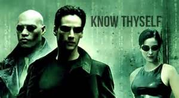

Being the Best Fork of Me Merged into DBC
Affirming Values and Defeating the self-generated Stereotype Threat
In Review:
"Stereotype Threat refers to being at risk of confirming, as self-characteristic, a negative stereotype about one's group."1
Social Tests by Steele and Aronson, 1995, "...showed that performance in academic contexts can be harmed by the awareness that one's behavior might be viewed through the lens of racial stereotypes."1
"He cannot know the answers, but neither can his rational self fully dismiss the questions. Together they raise a deeper question: Will his ... be a boundary to his experience, to his emotions, to his relationships?"2
Opening Remarks:
I am not sure that I fall clearly into a Stereotyped Group, however, after some reflection it seems reasonable that we may tend to generate a negative 'stereotype' of ourselves - a denigrated version of ourselves When we start to struggle, we sometimes begin to doubt, the impostor syndrome* comes into play and we also start to worry that we may confirm, not only to ourselves, but publicly, all the negative thoughts we have "known" all along about ourselves. These negative thoughts form kind of an electric fence around us, which keeps us from straying too far from standard. On one hand this helps us navigate the channels of society, but in many cases it keeps us from being the Best Version of Ourselves. This doubt tends to biofeedback and become a storm which can greatly reduce our effectiveness. Many people combat this by calling their loved one, parents, or a friend. Now, we Boots will find ourselves possibly a unique position of being away from our loved ones, from familiar places, sights, and sounds.
The Immature vs Mature Mindset
To counteract this phenomenon, it is very useful to have a mature mindset instead of an immature mindset.
"When confronted with shame in our adult years, those of us with good self esteem and a background of being loved and accepted, process the experience differently then those who do not have these inner resources. The most mature of us begin an inner search of memories for times when we felt truly accepted and loved, and are able to recover our equilibrium and even learn something more about ourselves and about the part that was exposed."4
I have already applied this wise observation several times since Week 3. I have seen an increase in connection between myself and those around me. I have witnessed an increase in productivity and effectiveness. I have found a greater sense of contentment. I feel more like me.
When real or perceived troubles come my way, I first look for all the examples/memories that show me who I really am. I then look at the troubles or comments or self-generated issues and address their validity for what they really are and see what portions are true and what portions are false. I now am at liberty to study and absorb, "where I can learn".
Mix this in with having a Change Mindset and it's a win, win!
Values as my Anchor
To strengthen/revitalize me at Devbootcamp when those waves of doubt start to stir, I will rely on my values, which are an anchor for my soul. Close relationships seem to make me the happiest, most proud, most productive, be that at work, during travel, or at home. I also find that a very similar feeling and result comes from: Cooperation, Honesty, Helping other people, and Wisdom. My family plans on setting aside time each week to Skype. I plan on working openly with everyone in the camp. I also find much strength in listening to others and having a positive mindset.
Here's to us Boots!
*Impostor Syndrome: "The impostor syndrome, sometimes called impostor phenomenon or fraud syndrome, is a psychological phenomenon in which people are unable to internalize their accomplishments. Despite external evidence of their competence, those with the syndrome remain convinced that they are frauds and do not deserve the success they have achieved. Proof of success is dismissed as luck, timing, or as a result of deceiving others into thinking they are more intelligent and competent than they believe themselves to be." 3